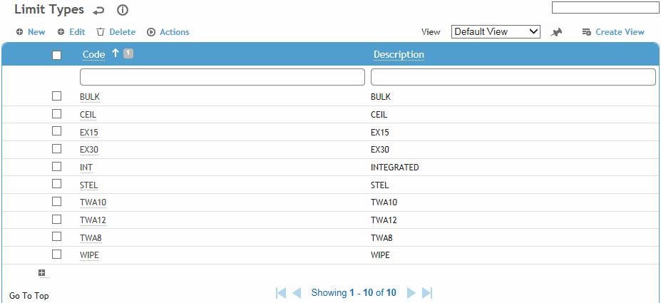
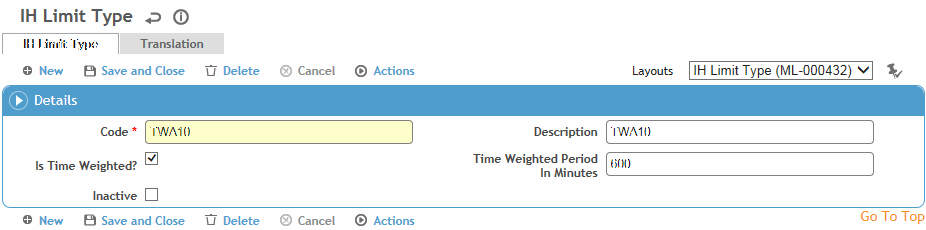

This table is used by air samples and contains time weighting factors for various limit types. You can define whether a sample type is time weighted, and what the time weighting period should be (in minutes). For example, a TWA8 sample would be time weighted and the weighting period would be set to 480 minutes. A STEL could be done in the same way and configured as 15 or 30 minutes.
To filter the list of records, enter a few characters in one or more of the fields at the top followed by an asterisk, then press Enter.

Click a link to edit, or click New.

Enter a Code and Description.
Indicate if it should be Time Weighted. If so, enter the Time Weighted Period In Minutes.
Click Save.